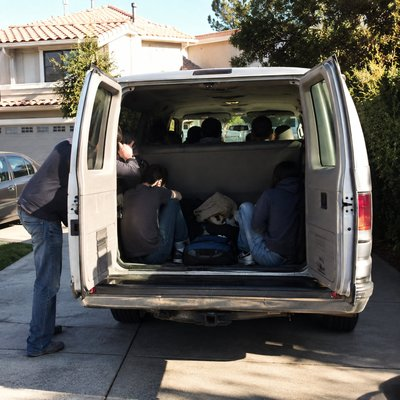

By now, the puzzles have become something to look forward to. On the first day of each month, a new one appears, and a familiar online thread begins to fill with guesses, references, connections, and ideas. The narrator is eager to join in, but the others often seem to be several steps ahead. He reads, thinks, types something out, and sometimes has to leave it in the box.
This song captures the experience of being part of a group before quite feeling like you belong. The puzzle gets solved, plans begin for Saturday, and the narrator assumes everyone else will go without him. Then someone asks the question that changes the day: “How about you, Miles?”
The final image is deliberately ordinary: a crowded van pulling away for a day out. He hasn't solved the puzzle, and he hasn't suddenly become an expert. But he's been invited along, and that turns out to be enough.
Sometimes, the real discovery isn't the answer on the screen. It's finding yourself included in what happens next.
First of the month I'd been waiting for it The page was still quiet I checked it anyway A word, a joke A guess about the time Then someone wrote, "It's up." And suddenly the screen came alive First of the month Something new was there Little thoughts kept moving Up and down the thread Someone found a line Someone knew where it was from I read it twice And still didn't know what I'd missed First of the month They were already ahead I watched the words go by And tried to keep up A line from a book A name I didn't know Someone saw the connection Before I saw the clue They pulled one thread Then another appeared I typed something out Then left it in the box By the time I found a thought They'd found three more The answer was getting closer I was still watching Then— "Solved." "Meet Saturday?" "Sure." "Saturday works." I kept quiet Let them make their plans I figured they'd go without me Then— "How about you, Miles?" Sure. Saturday came We met at someone's place One van in the driveway A couple too many Someone moved a bag Someone made some room The doors closed And we were on our way First of the month I waited for the page First of the month They found the answer Saturday came And I went along I hadn't solved a thing The van was already moving